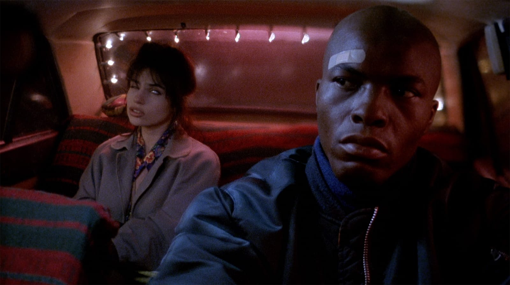
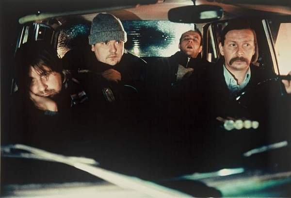

Night on Earth
2020
Night on Earth is a 1991 art comedy-drama film written and directed by Jim Jarmusch. It is a collection of five vignettes, taking place during the same night, concerning the temporary bond formed between taxi driver and passenger in five cities: Los Angeles, New York, Paris, Rome, and Helsinki. The action in the vignettes takes place at the same time, moving from Los Angeles in the United States to Helsinki, Finland. The scene in each city appears to occur later and later in the night due to the changing time zones. Jarmusch wrote the screenplay in about eight days, and the choice of certain cities was largely based on the actors with whom he wanted to work.
"it gets dark early in the winter"


The segment in Rome is the least successful, although Roberto Benigni, a favorite of Jarmusch, has fun with his zany monologue as he races through the empty streets before picking up the priest. The segment in Helsinki is the saddest, almost unbearably sad, as the driver hears what a bad day one of his passengers has had, and then tops him.
Jarmusch essentially empties the streets for his night riders. The cities are lonely and look cold; even in L.A., "it gets dark early in the winter." His characters seem divorced from the ordinary society of their cities; they're loners and floaters. We sense they have more in common with one another than with the daytime inhabitants of their cities. And their cabs, hurtling through the deserted streets, are like couriers on a mission to nowhere.